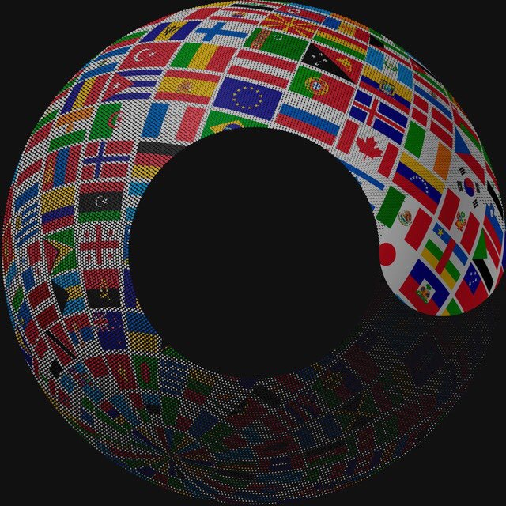
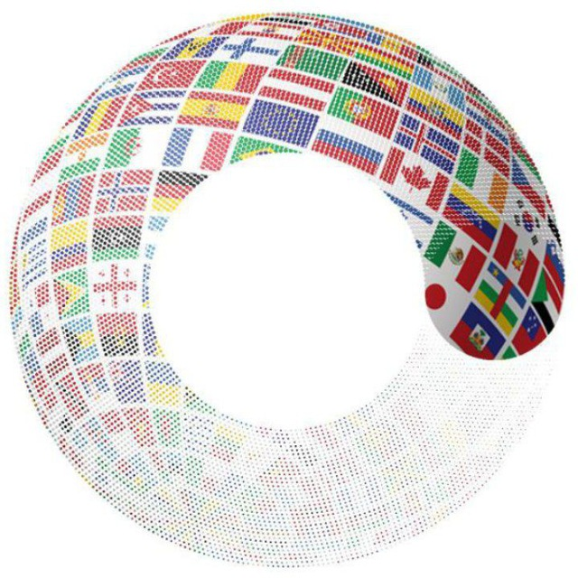

Buddy-сообщество
Волонтёры-кураторы для иностранных студентов Московского Политеха
Мы — команда студентов Московского Политехнического университета, объединённая искренним желанием помочь иностранным студентам из разных стран мира адаптироваться в нашем университете и в России, поскольку хорошо понимаем, с какими трудностями они сталкиваются: языковой барьер, незнание миграционного законодательства, сложности с оформлением документов, культурные различия и отсутствие привычной поддержки. Нашей ключевой целью является поддержание устойчивого волонтёрского сообщества студентов-кураторов, которое мы развиваем, обучаем и координируем, чтобы каждый иностранный студент мог получить своевременную помощь на всех этапах — от встречи в аэропорту до решения бытовых и учебных вопросов, а также разработка инновационного приложения на основе искусственного интеллекта, помогающего иностранным студентам следить за своими миграционными документами, не пропускать важные сроки продления визы, регистрации и других формальностей, получать персонализированные напоминания и подсказки, а также обеспечивающего прямую связь с волонтёрами для оперативного решения возникающих проблем, что в совокупности создаст комфортную, безопасную и дружелюбную среду для обучения и жизни иностранных студентов в Московском Политехническом университете и России.


Подгруппы нашей команды
| Кураторы | Волонтёры-старшекурсники, помогающие иностранным студентам |
| Организаторы | Команда, определяющая правила работы волонтёров и организация мероприятий |
| Разработчики | Создатели приложения-помощника для волонтёров и иностранных студентов |